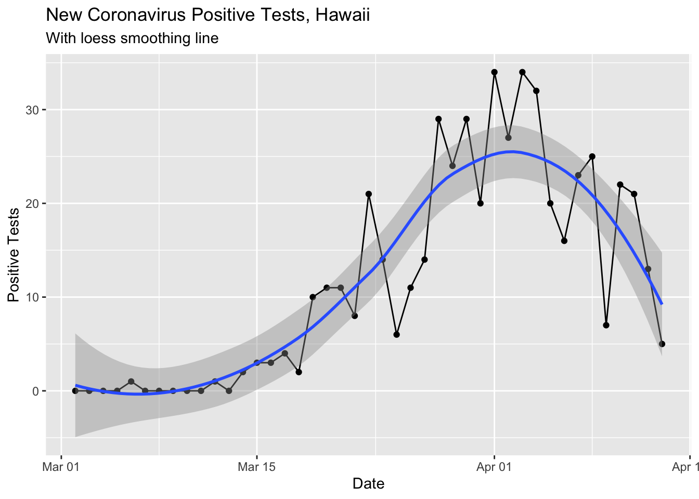
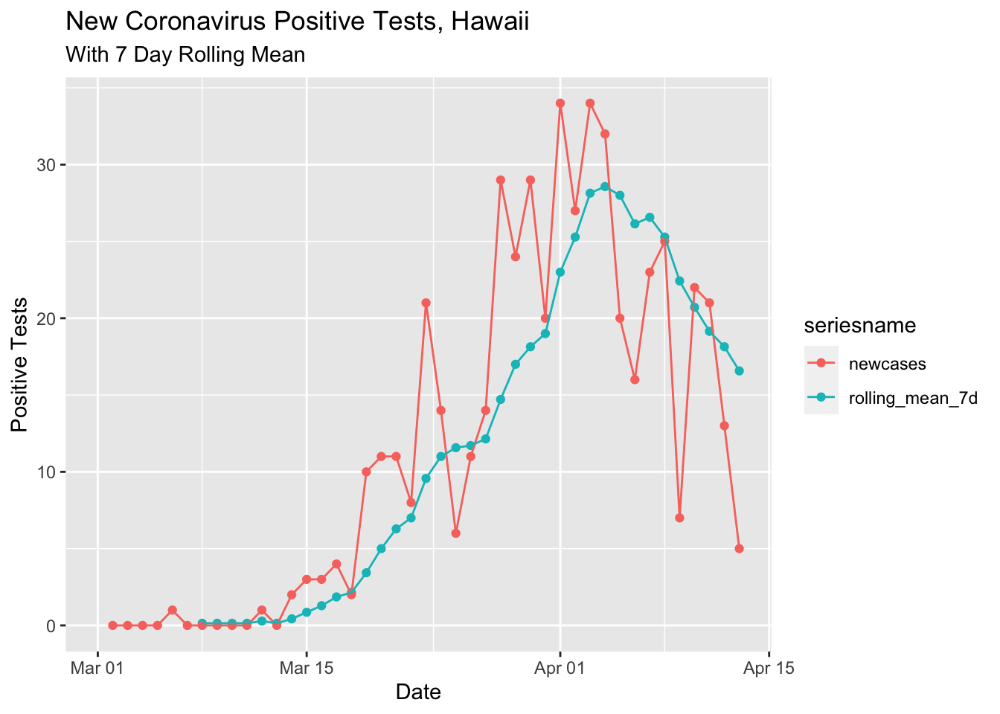

In my last post I used data from the New York Times Github repository. The authors update it within a day or two but I found a new crowdsourced data source from local tech community that is typically updated within minutes.
library(dplyr)##
## Attaching package: 'dplyr'## The following objects are masked from 'package:stats':
##
## filter, lag## The following objects are masked from 'package:base':
##
## intersect, setdiff, setequal, unionlibrary(ggplot2)
library(lubridate)##
## Attaching package: 'lubridate'## The following object is masked from 'package:base':
##
## datelibrary(scales)
library(tidyr)
library(zoo)##
## Attaching package: 'zoo'## The following objects are masked from 'package:base':
##
## as.Date, as.Date.numericcovid <- readr::read_csv('https://covid19-hawaii.herokuapp.com/hawaii_daily.sqlite/hawaii_daily?_format=csv&_size=max')## Parsed with column specification:
## cols(
## .default = col_double(),
## Date = col_character(),
## `Total Tests` = col_number(),
## `Daily Tests` = col_number(),
## `Total Private Tests` = col_number(),
## `Negative Tests` = col_number(),
## `OHCA Licensed Beds` = col_number(),
## `Non-ICU Beds` = col_number(),
## Source = col_character(),
## `Unnamed: 40` = col_character()
## )## See spec(...) for full column specifications.Data pull time
timestamp()## ##------ Mon Apr 13 21:37:24 2020 ------##Here’s what the data look like.
glimpse(covid)## Observations: 44
## Variables: 42
## $ rowid <dbl> 1, 2, 3, 4, 5, 6, 7, 8, 9, 10, 11, 12, 13, 14, …
## $ Date <chr> "3/1/20", "3/2/20", "3/3/20", "3/4/20", "3/5/20…
## $ `Total Cases` <dbl> 0, 0, 0, 0, 0, 1, 1, 1, 1, 1, 1, 2, 2, 4, 7, 10…
## $ `New Cases` <dbl> NA, 0, 0, 0, 0, 1, 0, 0, 0, 0, 0, 1, 0, 2, 3, 3…
## $ `Total State Res` <dbl> NA, NA, NA, NA, NA, 1, 1, 1, 1, 1, 1, 2, 2, 4, …
## $ `New State Res` <dbl> NA, NA, NA, NA, NA, 1, 0, 0, 0, 0, 0, 1, 0, 0, …
## $ `Total Oahu Res` <dbl> NA, NA, NA, NA, NA, 1, 1, 1, 1, 1, 1, 2, NA, NA…
## $ `New Oahu Res` <dbl> NA, NA, NA, NA, NA, NA, NA, NA, NA, NA, NA, NA,…
## $ `Total Maui Res` <dbl> NA, NA, NA, NA, NA, NA, NA, NA, NA, NA, NA, NA,…
## $ `New Maui Res` <dbl> NA, NA, NA, NA, NA, NA, NA, NA, NA, NA, NA, NA,…
## $ `Total HIsland Res` <dbl> NA, NA, NA, NA, NA, NA, NA, NA, NA, NA, NA, NA,…
## $ `New HIsland Res` <dbl> NA, NA, NA, NA, NA, NA, NA, NA, NA, NA, NA, NA,…
## $ `Total Kauai Res` <dbl> NA, NA, NA, NA, NA, NA, NA, NA, NA, NA, NA, NA,…
## $ `New Kauai Res` <dbl> NA, NA, NA, NA, NA, NA, NA, NA, NA, NA, NA, NA,…
## $ `Total Non Res` <dbl> NA, NA, NA, NA, NA, NA, NA, NA, NA, NA, NA, NA,…
## $ `New Non Res` <dbl> NA, NA, NA, NA, NA, NA, NA, NA, NA, NA, NA, NA,…
## $ Unclassified <dbl> NA, NA, NA, NA, NA, NA, NA, NA, NA, NA, NA, NA,…
## $ `Total Hosp` <dbl> NA, NA, NA, NA, NA, NA, NA, NA, NA, NA, NA, NA,…
## $ `New Hosp` <dbl> NA, NA, NA, NA, NA, NA, NA, NA, NA, NA, NA, NA,…
## $ `Total Deaths` <dbl> NA, NA, NA, NA, NA, NA, NA, NA, NA, NA, NA, NA,…
## $ `Total Released` <dbl> NA, NA, NA, NA, NA, NA, NA, NA, NA, NA, NA, NA,…
## $ `Daily Released` <dbl> NA, NA, NA, NA, NA, NA, NA, NA, NA, NA, NA, NA,…
## $ `Total Tests` <dbl> NA, NA, NA, NA, NA, NA, NA, NA, NA, NA, NA, NA,…
## $ `Daily Tests` <dbl> NA, NA, NA, NA, NA, NA, NA, NA, NA, NA, NA, NA,…
## $ `Total Private Tests` <dbl> NA, NA, NA, NA, NA, NA, NA, NA, NA, NA, NA, NA,…
## $ `Daily Private Tests` <dbl> NA, NA, NA, NA, NA, NA, NA, NA, NA, NA, NA, NA,…
## $ `Total State Tests` <dbl> NA, NA, NA, NA, NA, NA, NA, NA, NA, NA, NA, NA,…
## $ `Daily State Tests` <dbl> NA, NA, NA, NA, NA, NA, NA, NA, NA, NA, NA, NA,…
## $ `Negative Tests` <dbl> NA, NA, NA, NA, NA, NA, NA, NA, NA, NA, NA, NA,…
## $ `Positive Tests` <dbl> NA, NA, NA, NA, NA, NA, NA, NA, NA, NA, NA, NA,…
## $ `Inconcl Tests` <dbl> NA, NA, NA, NA, NA, NA, NA, NA, NA, NA, NA, NA,…
## $ `OHCA Licensed Beds` <dbl> NA, NA, NA, NA, NA, NA, NA, NA, NA, NA, NA, NA,…
## $ `ICU Beds` <dbl> NA, NA, NA, NA, NA, NA, NA, NA, NA, NA, NA, NA,…
## $ `Non-ICU Beds` <dbl> NA, NA, NA, NA, NA, NA, NA, NA, NA, NA, NA, NA,…
## $ `Occupied ICU Beds` <dbl> NA, NA, NA, NA, NA, NA, NA, NA, NA, NA, NA, NA,…
## $ `Occupied Beds` <dbl> NA, NA, NA, NA, NA, NA, NA, NA, NA, NA, NA, NA,…
## $ `% Beds Occupied` <dbl> NA, NA, NA, NA, NA, NA, NA, NA, NA, NA, NA, NA,…
## $ Ventilators <dbl> NA, NA, NA, NA, NA, NA, NA, NA, NA, NA, NA, NA,…
## $ `Ventilators Used` <dbl> NA, NA, NA, NA, NA, NA, NA, NA, NA, NA, NA, NA,…
## $ `% Ventilators Used` <dbl> NA, NA, NA, NA, NA, NA, NA, NA, NA, NA, NA, NA,…
## $ Source <chr> NA, NA, NA, NA, NA, NA, NA, NA, NA, NA, NA, "ht…
## $ `Unnamed: 40` <chr> NA, NA, NA, NA, NA, NA, NA, NA, NA, NA, NA, NA,…Data processing steps.
covid$Date <- mdy(covid$Date)The data has the last date as 4/15/2020 for some reason, so I went in and fixed it manually.
# This step will need to be deleted once the source data is corrected
date415 <- which(covid$Date == "2020-04-15")
covid$Date[date415] <- as.Date("2020-04-13")Change per Day
Here’s the change in our state per day, smoothed with the loess method (regression line fitting).
covid %>% filter(!is.na(`New Cases`)) %>%
ggplot(aes(x = Date, y = `New Cases`)) +
geom_point() +
geom_line() +
geom_smooth() +
labs(title ="New Coronavirus Positive Tests, Hawaii",
subtitle = "With loess smoothing line") +
ylab("Positive Tests")## `geom_smooth()` using method = 'loess' and formula 'y ~ x'
I also tried last 7 smoothing.
covid %>% select(Date, `New Cases`) %>%
mutate(rolling_mean_7d = rollmean(`New Cases`, 7, align = 'right', fill = NA)) %>%
mutate(newcases = `New Cases`) %>%
select(Date, newcases, rolling_mean_7d) %>%
gather(`rolling_mean_7d`, `newcases`, key = seriesname, value = cases) %>%
ggplot(aes(x = Date, y = cases, color = seriesname)) +
geom_point() +
geom_line() +
labs(title ="New Coronavirus Positive Tests, Hawaii",
subtitle = "With 7 Day Rolling Mean") +
ylab("Positive Tests")## Warning: Removed 8 rows containing missing values (geom_point).## Warning: Removed 8 row(s) containing missing values (geom_path).
Both curves are pretty nice, showing a reduction in the new positive tests per day in the last week. I hope the trend continues!